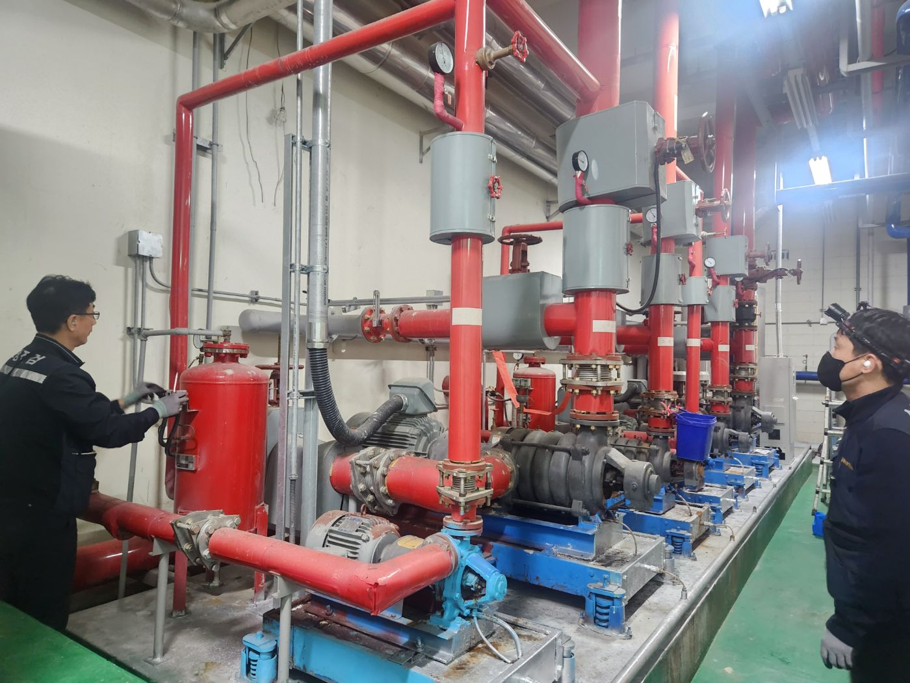
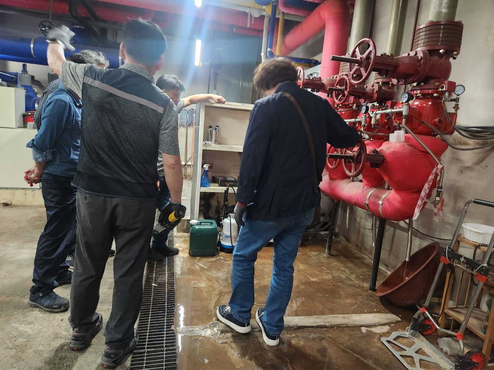
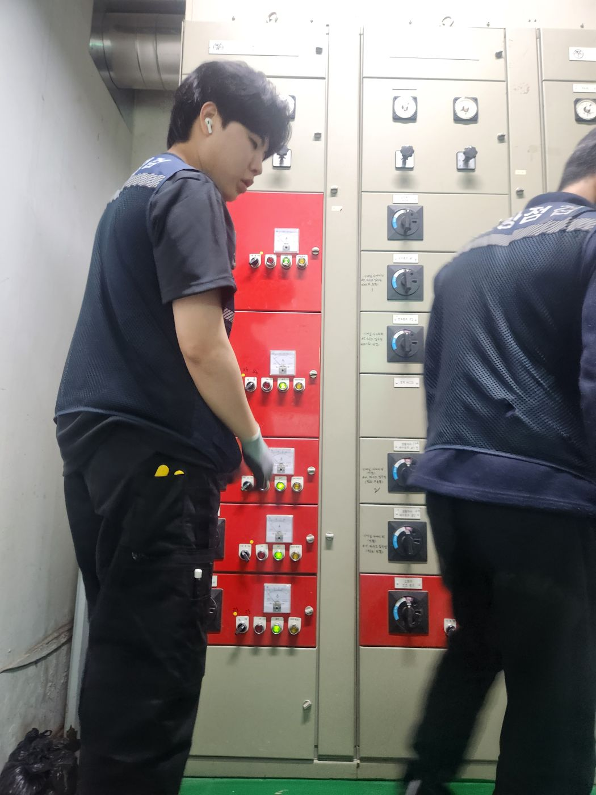
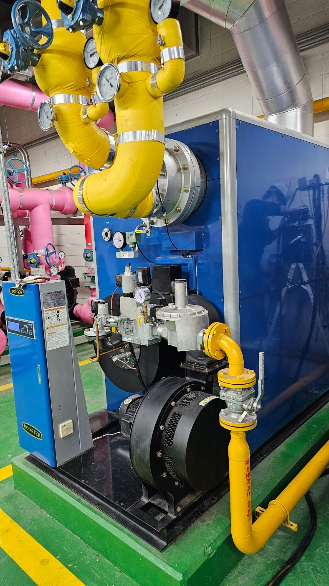
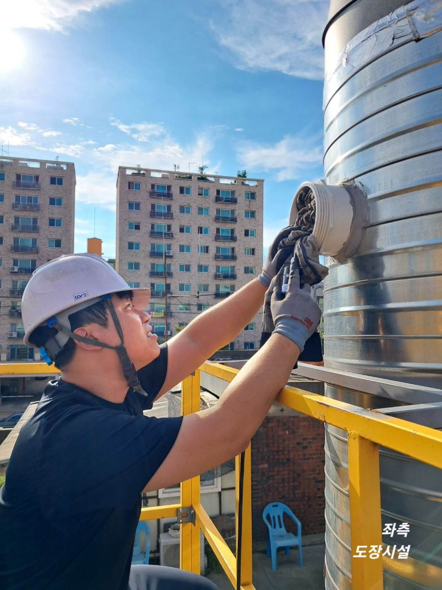

건물 법정관리 올인원 서비스

복잡한 건물 법정 점검, 한 곳에서 한번에!
소방·기계설비·정보통신 성능점검부터 환경·위생·보험까지. 건물 하나에 얽힌 모든 법정 의무를 법정점검 통합관리센터가 한 곳에서 관리하고, 현장 실시간 응대까지 끝까지 함께합니다.
ONE COMPLIANCE OS
법정점검
통합관리센터
통합관리센터
소방 점검
기계설비 점검
정보통신 점검
승강기 점검
전기 점검
저수조 소독/방역
저수조 청소
실내공기질 측정
대기 자가측정
화재보상책임 보험

현장 실시간 점검 진행 중



